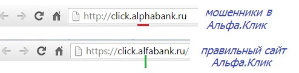

В данной статье мы подробнее рассказываем вам о фишинге! Изучите материал, чтобы уметь противостоять злоумышленникам!
Что такое фишинг?
Фишинг (от англ. Phishing — преднамеренное искажение слова fishing: password (пароль) + fishing (ловля)) — вид интернет-мошенничества, при котором злоумышленники пытаются выманить у жертвы личную информацию обманным путём. Обычно для этого используют поддельные сайты, письма или сообщения, которые выглядят как настоящие. Задача — заставить человека перейти по ссылке, ввести данные и, тем самым, передать их мошенникам. Фишинг также является одной из форм социальной инженерии. Мошенники используют психологические уловки для того, чтобы заполучить конфиденциальную информацию.
История появления фишинга
Крупные случаи фишинга
Масштаб проблем, связанных с распространением фишинговых атак и развитием этой сферы киберпреступности, можно продемонстрировать через одни из самых крупных и известных случаев нападения мошенников.
Начнём со случая, который произошёл летом 2024 года, в преддверии олимпийских игр в Париже. Группа восточноевропейских киберпреступников запускает одну из масштабных фишинговых кампаний — операцию «Ticket Heist». Они создали более 700 поддельных доменов, каждый из которых был практически неотличим от официальных сайтов. SSL-сертификаты, идеальное копирование сайтов, контент на 12 языках: всё это создавало иллюзию подлинности. За 2 месяца кампании пострадало около 180 000 человек, а общая сумма похищенных средств достигла 15 миллионов евро. Хакеры добились желаемой цели.
Следующим рассмотрим возвращение небезызвестного «Petya» в марте 2024 года. Мировое киберпространство столкнулось с новой версией уже известного вируса-вымогателя, который прозвали «Petya». Компьютерный паразит во второй версии использовал уязвимости в протоколе SMB (Server Message Block), что позволяло ему быстро распространяться по корпоративным сетям. Так же они использовали уязвимости в системах безопасности, поэтому распространяли вирус через заражённые компьютеры по локальным сетям.
Было отправлено более 500 000 фишинговых писем по всему миру, в результате пострадало более 100 крупных организаций в Европе и США, включая финансовые учреждения и компании из сферы здравоохранения (из-за атак были потеряны критически важные данные пациентов, что поставило под угрозу их здоровье). Возрождение «Petya» в 2024 году стало напоминанием о том, что киберугрозы продолжают эволюционировать.
Какие данные под угрозой
Прежде чем приступить к кибератаке, мошенники тщательно собирают информацию о потенциальной жертве — будь то отдельный человек или целая организация. На этапе, так называемой, разведки злоумышленники анализируют открытые источники: изучают корпоративные сайты, социальные сети, публичные базы данных, WHOIS-регистры доменов и даже утечки данных. Их цель — получить как можно больше сведений: рабочие email-адреса сотрудников, структуру компании, доверенные ресурсы, профессиональные интересы, используемые сервисы и даже личные привычки пользователей.
Эта собранная информация позволяет создавать высокоточные фишинговые атаки — например, письма, имитирующие сообщения от коллег, партнёров или известных сервисов. Такие атаки выглядят настолько правдоподобно, что жертва легко может перейти по вредоносной ссылке или ввести свои учётные данные на поддельной странице.
Особую угрозу представляет привычка многих пользователей использовать один и тот же логин и пароль на разных сайтах и в мессенджерах. Достаточно однажды утечь одному паролю — например, из-за взлома малоизвестного сервиса — и злоумышленник получает возможность автоматически проверять его на десятках других платформ. Это может привести к катастрофическим последствиям: потере доступа к почте, банковским счетам, мессенджерам, облачным хранилищам, а также к краже переписок, личных файлов, контактных списков и даже финансовых средств.
Таким образом, даже незначительная утечка данных или неосторожный клик могут стать точкой входа для полного компрометирования цифровой личности.
Виды фишинга
Сообщения
Существует несколько распространённых форм фишинга, отличающихся каналом доставки и методом обмана. Одной из самых частых является email-фишинг — рассылка спама по электронной почте, часто направленная на клиентов финансовых учреждений, стриминговых сервисов и других популярных платформ. Злоумышленники используют метод «spray and pray» («распыли и молись»), массово отправляя фишинговые письма в надежде, что кто-то из получателей попадётся на уловку. Близок к этому blind phishing («фишинг вслепую») — атака без конкретной цели, основанная на той же идее массовой рассылки в расчёте на случайный успех.
Другой канал атаки — смс-фишинг («смишинг», «SMS Phishing»): на телефон жертвы приходит текстовое сообщение с просьбой перейти по ссылке, позвонить по указанному номеру или написать на поддельный email. Впоследствии злоумышленники запрашивают конфиденциальные данные, выдавая себя за доверенные организации.
Более изощрённой разновидностью является clone phishing («клон-фишинг») — атака, при которой злоумышленники копируют ранее полученное жертвой легитимное письмо, но заменяют в нём ссылку или вложение на вредоносные. Такая атака обычно возможна только после взлома почтового ящика отправителя или получателя, что делает её особенно убедительной.
Помимо сообщений, фишинг может осуществляться и через всплывающие окна («Pop-Ups»). Эти элементы интерфейса имитируют легитимные уведомления — например, окно оплаты при онлайн-банкинге — и перенаправляют пользователя на поддельные сайты. Введённые в такие формы данные (логины, пароли, банковские реквизиты) сразу попадают в руки мошенников.
Обход препятствий
Некоторые фишинговые атаки полагаются не только на социальную инженерию, но и на технические уловки для обхода защиты или перехвата данных. Например, при обходе фильтров («Filter Evasion») злоумышленники намеренно заменяют текст фишингового сообщения изображением, чтобы обойти антифишинговые системы, анализирующие только текстовое содержимое. Однако современные решения всё чаще включают технологии распознавания текста на картинках, что снижает эффективность такого подхода.
Гораздо более сложной технической атакой является фишинг «человек посередине» («Man-in-the-Middle» или «Web-Based Delivery»). В этом случае злоумышленник незаметно внедряется в сетевое соединение между пользователем и сервером, фактически становясь посредником в обмене данными. Благодаря этому он может перехватывать, читать и даже изменять информацию, передаваемую от жертвы к легитимному сайту — например, логины, пароли или банковские реквизиты.
Ещё один распространённый технический метод — межсайтовый скриптинг («XSS», «Cross-Site Scripting»). Он заключается во внедрении вредоносного кода в уязвимые веб-приложения или сайты. Когда пользователь заходит на такой скомпрометированный ресурс, вредоносный скрипт автоматически выполняется в его браузере, позволяя злоумышленнику похищать сессии, куки или перенаправлять жертву на поддельные страницы. Часто эти фальшивые сайты копируют оригинальные даже в деталях — включая URL-адрес (с использованием похожих символов или поддоменов) и визуальный интерфейс, — что делает обман особенно правдоподобным.
Вредоносные ПО
Некоторые фишинговые атаки напрямую связаны с распространением вредоносного программного обеспечения («Malware»). Злоумышленники прикрепляют вредоносные файлы к фишинговым письмам или маскируют их под безобидные документы, архивы или программы. Как только пользователь запускает такой файл, на его устройстве активируется вредоносный код — например, keylogger, который записывает каждый нажатый символ на клавиатуре. Это позволяет злоумышленникам перехватывать пароли, банковские реквизиты и другую конфиденциальную информацию.
Близким по механизму является malvertising («недобросовестная реклама») — термин, образованный от сочетания слов «malware» и «advertising». Такая атака использует легитимные рекламные сети для размещения вредоносной рекламы. При открытии сайта с такой рекламой на устройстве пользователя может автоматически запуститься загрузка вредоносного ПО — даже без его активных действий, таких как клик по баннеру. В результате мошенники получают доступ к данным жертвы или устанавливают скрытый контроль над её устройством.
Целевой
Современные фишинговые атаки всё чаще используют персонализированный подход и доверие жертвы к авторитетным фигурам. Одной из таких форм является вишинг («телефонный фишинг»): злоумышленники звонят от имени сотрудников банка, полиции или других официальных организаций, утверждая, что банковские счета жертвы находятся под угрозой. Чтобы усилить эффект, они создают ощущение срочности и оказывают психологическое давление, из-за чего человек теряет бдительность и охотнее раскрывает конфиденциальные данные или даже переводит крупные суммы денег.
Более изощрённой разновидностью целевых атак является spear-фишинг («целевой фишинг»). В отличие от массовых рассылок, здесь злоумышленники заранее собирают информацию о конкретной жертве — часто через социальные сети — и подделывают сообщения от знакомых, коллег или доверенных организаций. Такой подход значительно повышает вероятность успеха атаки, особенно когда цель — получить доступ к защищённым корпоративным системам или ценным данным.
Особый подвид spear-фишинга — whaling («охота на китов») — направлен на высокопоставленных лиц: руководителей компаний, топ-менеджеров, знаменитостей или других важных людей, которых в среде фишеров называют «китами». Атаки на таких лиц тщательно продуманы и часто имитируют внутреннюю корпоративную коммуникацию, чтобы вызвать максимальное доверие.
С развитием технологий искусственного интеллекта появился ещё более убедительный инструмент манипуляции — дипфейк AI. С его помощью можно создавать реалистичные поддельные аудио-, видео- или фотофрагменты. Например, мошенник может сгенерировать голосовое сообщение, будто бы от имени генерального директора компании, с просьбой срочно перевести деньги или предоставить доступ к системе. Из-за высокой достоверности таких материалов даже опытные сотрудники могут не распознать обман и стать жертвами атаки.
Ссылки
Современные фишинговые атаки активно используют легитимные цифровые каналы и уязвимости инфраструктуры, чтобы незаметно перенаправить пользователей на мошеннические ресурсы. Один из таких методов — фишинг через поисковые системы («Phishing through Search Engines»): злоумышленники создают сайты с интригующими или выгодными заголовками и оптимизируют их под популярные поисковые запросы. Когда пользователь вводит запрос, поисковик показывает такие поддельные страницы среди результатов, и после перехода по ссылке жертва оказывается на фишинговом сайте, где вводит свои личные данные, не подозревая об обмане.
Другой способ — фишинг с помощью QR-кодов («квишинг»). Злоумышленники создают мошеннические QR-коды и размещают их в общественных местах — на листовках, наклейках, плакатах или в цифровых рассылках. Из-за удобства и привычки быстро сканировать QR-коды пользователи часто не проверяют, куда ведёт ссылка, и автоматически перенаправляются на фишинговые страницы, где их просят ввести конфиденциальную информацию.
Также распространён метод внедрения контента («Content Injection»), при котором оригинальный, доверенный сайт частично изменяется — например, в него встраивается ложная форма входа или рекламный баннер с поддельной ссылкой. Пользователь, находясь на знакомом ресурсе, не замечает подмены и добровольно передаёт свои данные злоумышленникам.
Ещё более скрытой техникой является фарминг («Pharming» или «Website Forgery») — атака, название которой образовано от слов «фишинг» и «фермерство». В отличие от фишинга, где жертву нужно убедить перейти по ссылке, при фарминге мошенники создают точную копию легального сайта и перенаправляют на неё трафик с настоящего ресурса. Это достигается за счёт подмены DNS-запросов или компрометации сетевого оборудования. В результате пользователь, вводя в браузере правильный адрес, всё равно попадает на поддельный сайт и раскрывает свои данные, даже не осознавая, что стал жертвой атаки.
Алгоритм фишинга
Рассмотрим стандартный алгоритм фишинговой атаки. В начале мошенники собирают информацию, которой можно будет воспользоваться для обмана пользователей. К такой информации относится: личные данные пользователя, важные данные компаний, почты сотрудников, доверенные ресурсы компаний или пользователей и многое другое. После сбора данные анализируются и обрабатываются так, чтобы их можно было применить для атаки.
Алгоритм зависит от вида фишинга. Изучим для начала порядок действий, связанный с теми видами, которые используют сообщения для получения конфиденциальной информации:
- Создаются письма, сообщения шаблоны или всплывающие окна, которые копируют настоящие;
- Фишеры создают реплику легитимного сайта;
- Мошенники рассылают письма, в которых находиться ссылка на фишинговый сайт или внедряют её в фишинговые уведомления на разных ресурсах;
- Сбор статистики. Анализ того, клюнула ли «рыбка» на крючок.
Жертва переходит по ссылке и вводит данные для авторизации на сайте. Вследствие этого мошенники получают пароль пользователя. Используя этот пароль, фишеры могут получить доступ к данным.
Далее перейдём к атакам, которые обходят препятствия и используют ссылки:
- Для начала мошенник занимается разработкой средств, необходимых для атаки. К примеру, создает фишинговую картинку или пишет код для уязвимых сайтов. Сюда же относятся QR-коды или сайты, которые перенаправляют трафик с настоящих;
- Злоумышленник внедряет эти средства в различные ресурсы, чтобы как можно больше пользователей повелись на уловку. Помимо этого, часто мошенник сам внедряется между пользователем и сервером, воруя данные жертвы;
- После атаки проводится анализ её эффективности.
Теперь рассмотрим фишинг, связанный с вредоносным ПО:
- Для начала мошенник разрабатывает программу, которая полностью копирует или очень похожа на настоящую, и добавляет в неё элементы, необходимые для завладения данными пользователя;
- ПО распространяется через письма или сообщения, а также размещается на разных ресурсах;
- Мошенник получает логины, пароли и другую информацию, потому что пользователь воспользовался фишинговой программой.
Наконец, изучим порядок действий при целевом фишинге:
- В первую очередь мошенники собирают информацию о пользователе. Количество этих данных зависит от того, насколько направленной будет атака. Злоумышленник хочет максимально влиться в доверие к жертве, поэтому порой надо собрать информацию не только о пользователе, но и о его родственниках и знакомых, чтобы потом отправлять сообщения и письма от их лица. Если атака проводится на компанию или конкретного сотрудника, то фишеры собирают данные о почтах сотрудниках, важных документах и другую информацию, которая может пригодиться для действенного воздействия на жертву;
- Далее проводится атака с применением уже известных средств: письма, сообщения, фишинговые сайты.
Алгоритм фишинга не значительно, но отличается в зависимости от видов атак. Однако цель одна — украсть данные пользователя или компании.
Инструменты мошенников
Современные кибермошенники редко полагаются только на хитрость или социальную инженерию — они активно используют специализированные технические средства, автоматизирующие сбор данных, подделку веб-страниц, рассылку фишинговых писем и обход защитных механизмов. Эти инструменты делают атаки не только более масштабными, но и значительно труднее для обнаружения.
В этом разделе мы рассмотрим наиболее распространённые технологии и программные решения, которые злоумышленники применяют для проведения фишинга и других видов онлайн-мошенничества.
- Фишинговые наборы («phishing kits») — это готовые наборы скриптов или веб-страниц, которые имитируют различные онлайн-ресурсы. Чаще всего такие наборы включают в себя функции сбора данных, маскировку под https и автоматическую отправку украденных данных. С их помощью даже новички, которые не обладают большими знаниями в программировании, могут создать свою инфраструктуру для масштабных фишинговых атак, а в случае блокировки, быстро возобновить.
- Сокращатели ссылок и URL-маскировка
Сервисы-сокращатели позволяют не только делать короче длинные адреса, но и внедрять в ссылки скрытые фрагменты данных, которые могут использоваться как для передачи различных данных, так и для какой-либо вредоносной активности.
- OSINT — Open Source Intelligence или разведки из открытых источников
Современные злоумышленники всё чаще и чаще проводят разведки по открытым источникам, чтобы повысить успешность атак. По аватаркам, постам или публичным фотографиям можно определить внешность, страну/город проживания. Также может проводиться мониторинг соцсетей, из которых можно определить различные события в жизни жертвы. В итоге мошенник может получить подробную информацию о своей жертве, что позволяет добиться правдоподобности в атаках.
- ИИ как усилитель фишинга
Современные нейросети во много раз повысили эффективность фишинговых атак за счёт отсутствия грамматических ошибок, каких-либо шаблонных фраз, неестественного стиля общения.
Нейросеть анализирует публичные данные пользователя и генерирует подходящее под ситуацию письмо, что значительно увеличивает шансы на успешную атаку. Также с помощью нейросетей создаётся почти неотличимая от оригинала речь (например, родственника, руководителя или коллеги), что эффективно работает при вишинге. Сюда же можно отнести и сгенерированные видео-сообщения для общения с жертвой.
Для автоматизации процесса используются различные боты на основе языковых моделей, которые могут вести переписки круглосуточно, имитируя манеру общения реального человека.
Методы и средства защиты от атак
Чтобы не попасться на уловки мошенников необходимо использовать различные методы и средства. Так как фишинг остаётся одним и самым распространённых видов кибермошенничества, то существуют различные пути защиты от него, начиная с антивирусных решений и заканчивая повышением цифровой грамотности.
- Опасаться телефонных звонков с неизвестных номеров
Стоит понимать, что к любому звонку с неизвестного номера нужно относиться настороженно. Если вы всё же вступили в разговор с незнакомцем, не стоит затягивать разговор. Мошенники используют социальную инженерию, дабы создать психологическое давление.
- Не перезванивать на незнакомый номер
Если же вы заметили пропущенный вызов на телефоне, не стоит перезванивать. Очень большая вероятность, что это спамеры, мошенники или соцопросы.
Если это всё же были ваши знакомые, родственники или друзья, они найдут способ связаться. В случае важного звонка вам обязательно позвонят повторно или отправят СМС, чтобы указать необходимость ответного звонка.
- Не отвечать на странные вопросы
В соцсетях незнакомые люди могут начать диалог с вопросов об имени и фамилии, личном адресе и прочем. Не стоит продолжать диалог с человеком, который задаёт вопросы схожего характера.
- Иметь семейные «пароли»
Имеется в виду кодовый пароль, например, кличка кошки (не собаки, так как собак часто окликают на прогулках), какие-нибудь семейные прозвища и тому подобное. Это может пригодиться для проверки подлинности личности при звонках с неизвестных номеров.
- Использовать специальные функции на смартфоне
Во многих современных смартфонах встроены функции фильтрации входящих звонков, чтобы фильтровать входящие звонки. Например, на iPhone есть функция перевода звонков на автоответчик. Стоит поискать такую функцию на вашем устройстве. Если таковой не найдётся, можно установить с маркета приложений. Так же можно рассмотреть подписки у мобильных операторов. У операторов есть базы данных «плохих» и «хороших» номеров. Поэтому операторы могут блокировать нежелательные звонки прямо на уровне своих серверов.
- Уникальные и сложные пароли
Старайтесь составлять пароли не из популярных слов и чисел. Не используйте даты рождения, имена. В некоторых браузерах и сервисах есть генераторы надёжных паролей, можно использовать их, так как в дальнейшем они будут храниться во встроенном менеджере паролей. Так же не будет лишним немного изменить сгенерированный пароль, если хотите его запомнить.
Будет не лишним придумать свои методы составления и запоминания паролей, так называемые мнемоники. Любители истории могут использовать имена и фамилии философов или учёных, а кто хорошо разбирается в математике, может применять сложные, но запоминающиеся последовательности чисел (различных прогрессий и т. п.).
- Аккуратное хранение паролей
Не следует хранить пароли на компьютере или смартфоне, их может найти и украсть вирус. Лучше использовать менеджеры паролей (к примеру, в браузере). Можно хранить в бумажном виде, используя блокнот. Но в данном случае лучше шифровать информацию (например, намёками или кодовыми фразами, которые поймёте только вы).
- 2FA («двухфакторная аутентификация»)
Это метод, при котором используются два уровня защиты: первый — пароль, а второй — код из СМС или почтового сообщения. Используйте двухфакторную аутентификацию, где она доступна.
- Разрешения при установке и запуске приложений
При установке приложений из неофициальных источников стоит обращать внимание на разрешения, которые они запрашивают. Всякая вредоносная активность приложения связана с конкретными разрешениями, полученными от пользователя.
- Уровень заряда батареи
Если Ваш смартфон внезапно стал плохо держать заряд, то стоит проверить его на наличие вредоносных программ. Нередко это является следствием наличия вредоносных приложений.
- Ввод личных данных на сайтах
Не вводите личные данные на сайтах, которым не доверяете, особенно без серьёзной необходимости. Не лишним будет проверить доменное имя сайта, чтобы убедиться, что введённые вами данные будут в безопасности.
- Не переходить по ссылкам и не загружать медиа
На почтовый ящик могут приходить письма со ссылками или вложением. Не стоит переходить по ссылкам и скачивать медиа от сомнительного отправителя. Мошенники создают сайты, походящие под легитимные, которые и используют в качестве вложения в письмах или СМС.
Различия фишинговых и легитимных сайтов
В современном интернет-пространстве просто необходимо различать вредоносные сайты от легитимных.
Легитимный сайт — это надёжный интернет-ресурс, которому можно доверять, а вредоносный, в нашем случае фишинговый, — это полная его противоположность.
Далее подробнее разберём, как отличить легитимные сайты от сайтов мошенников.
Прежде всего, если ссылка вызвала у вас вызвала подозрения, — это уже один из признаков, что что-то может быть не так. Чтобы изучить сайт, не переходя на него, наведите курсор мыши на ссылку и посмотрите в левый нижний угол окна, там будет отображаться полный адрес ссылки.
Первым делом проверьте опечатки в адресе сайта. Буквы в слове могут специально пропускаться, например: «online.sberbnk.ru». Также возможны сочетания букв, походящие на другие («rn» как «m») или цифры вместо букв. Так в некоторых ссылках можно увидеть «1» вместо «l». Таким образом злоумышленник ориентируется на невнимательного пользователя.
Избегайте сокращённых ссылок. Мошенники часто используют «сокращатели ссылок», чтобы скрыть истинное место.
Старайтесь сторониться сайтов без шифрования https и иконки, оповещающие об опасности. Легитимные сайты обычно используют данный протокол для безопасного соединения с сервером.
Для большей уверенности можно проверить возраст сайта с помощью онлайн-сервисов. Легитимным сайтам, как правило, много лет с момента создания. В то время как фишинговые сайты возрастом примерно месяц, если не меньше.
Взглянем на следующие ссылки:
https://www.gazprom.ru
https://www.gazpr0m.ru
Можем заметить, что в нижней ссылке была использована цифра «0» вместо буквы «o». Рядовой пользователь легко может не заметить опечатку и перейти на сайт мошенников.
На данной картинке наглядно показывается ключевое отличие между фишинговым и легитимным сайтом.
Фишинговый сайт не имеет протокол https, следовательно, отсутствует шифрование соединения. Также заметим, что злоумышленник сделал ошибку, написав «ph» вместо «f», что может не заметить невнимательный пользователь.
Легитимный же сайт имеет корректный домен «alfabank», а также использует безопасный протокол https, который гарантирует зашифрованное соединение с помощью SSL-сертификата.
Что делать, если вы стали жертвой фишера и куда обращаться?
Первое что надо понять, что паника здесь не поможет, постарайтесь взять себя в руки. Ниже приведём алгоритм действий в случае, если вы подверглись фишинговой атаке:
- Немедленно прекратите взаимодействие с объектом — будь то письмо, СМС, человек на другой линии телефона;
- Смените пароли. Чем скорее мошенник потеряет доступ к вашему аккаунту, тем больше данных Вы сможете сохранить;
- Проверьте ваши банковские счета. А если не уверены, утекли ли данные (номер карты, PIN-код, CVV/CVC-код с обратной стороны карты), то обратитесь и заблокируйте счёт, при необходимости откройте новый;
- Проверьте устройство на наличие вредоносного ПО. Используйте антивирусы и средства защиты информации;
- Обратитесь в правоохранительные органы. Проинформируйте правоохранительные органы о мошеннических действиях. Если атака произошла от имени существующей компании, уведомите её об этом. В случае если происшествие случилось на работе, поставьте в известность IT-отдел, службу безопасности или начальство. Компетентные люди обеспечат защиту от распространения по корпоративной сети, если такая есть;
- Если атака произошла в социальной сети, то заблокируйте мошенника, сделайте фото- или видеофиксацию доказательств мошенничества и удалите сообщения. Если такая возможность есть, то предупредите других пользователей и администрацию сайта о подозрительном аккаунте.
Если вы всё же стали жертвой фишинговой атаки, важно действовать быстро и обращаться в соответствующие инстанции в зависимости от того, какие данные были скомпрометированы.
В случае, если:
- Мошенникам стали доступны ваши данные от банковских карт и счетов, необходимо незамедлительно обратиться в службу технической поддержки вашего банка.
- Утекли ваши данные от аккаунтов социальных сетей, то как можно скорее поменяйте пароль и логин от аккаунта и обратитесь к администрации сайта.
- Злоумышленник получил доступ к персональным данным, таким как паспорт, ИНН и т. п., то следует обратиться в МВД России через сайт или лично в отделении. Также можно обратиться в полицию с заявлением о мошеннических действиях.
Чтобы сообщить о факте фишинговой атаки, можно подать жалобу на сайте информационной системы мониторинга фишинговых сайтов: https://paf.occsirt.ru. Так вы посодействуете блокировке фишинговых сайтов.
Методы государства, предпринимаемые для защиты населения от фишинговых атак
Государство осведомлено о проблеме фишинга, поэтому оно активно принимает меры по защите от киберугроз. Одним из примеров таких методов можно привести публикацию на сайте «Госуслуги» статьи, в которой рассказывается, как защититься от фишинга. В ней простыми словами расписаны те действия, которые помогут пользователям не попасть в сети мошенников. Также упоминается очень важный пункт: если письмо или сайт кажутся подозрительными, нужно сообщить об этом в службу безопасности. Так, каждый пользователь может помочь в борьбе с мошенниками. Сообщая о подозрительных источниках, вы защищаете не только себя, но и других.
Помимо информационных материалов, есть также и законодательная база. В том числе статьи уголовного кодекса, например, ст. 159 УК РФ («Мошенничество, то есть хищение чужого имущества или приобретение права на чужое имущество путём обмана или злоупотребления доверием») или ст. 272 УК РФ («Неправомерный доступ к компьютерной информации»). Государственные органы также участвуют в борьбе с фишингом. К примеру, Роскомнадзор вносит фишинговые сайты в реестр запрещенных сайтов.
Государство создаёт правовую и организационную основу для борьбы с фишингом, но эффективная защита — это совместная ответственность государства, бизнеса и каждого пользователя.
Как наша команда пришла к этой идее и как была произведена реализация
Наша команда состоит исключительно из студентов 2 курса университета, мы не являемся профессионалами в теме компьютерной безопасности, однако усердно обучаемся этому. Изначально этот сайт был всего лишь проектной деятельностью, однако после углубленного погружения в тему мы осознали, насколько мало мы знаем о видах мошенничества! Даже то, что нам рассказывают на лекциях в университете — только капля в огромном море киберпреступности. Наша команда «Fishers» превратила обычный учебный проект в цель по просвещению общества в сфере фишинга. Однако мы прекрасно понимали, что не все люди хорошо разбираются в терминах, им бы хотелось что-то более понятное и привычное, поэтому было принято решение объяснять все тонкости фишинга простыми и доступными для рядового пользователя словами. Как дальнейшее развитие данного проекта предполагается распространение данного сайта и просвещение более широкого круга лиц. Нам очень приятно, что вы дочитали до конца данную статью, ведь мы очень старались! И напоследок! Не клюй на крючок и не попадайся в сети фишера!
Над проектом работали
Ульяна Ш. — Редактор сайта
Константин Н. — Программист
Ксения Ч. — Главный редактор статьи
Диана Ч. — Редактор статьи
Дарья С. — Редактор статьи
Источники
- Портал Государственных услуг // «Как не стать жертвой фишинга»: [статья] — 2024. — URL: https://www.gosuslugi.ru/life/details/dont_get_caught_phishing
- Ахона Р. // PowerDmarc // «Что такое URL-фишинг?» [статья] — 2023. URL: https://powerdmarc.com/ru/what-is-url-phishing
- Ирина П., Олег П // МТС ЛИНК // «Как не потерять свои данные: что такое фишинг и как с ним бороться» [статья] — 2024. — URL: https://mts-link.ru/blog/chto-takoe-fishing-i-kak-s-nim-borotsya
- Kaspersky // «Что такое фарминг и как от него защититься» [статья] — URL: https://www.kaspersky.ru/resource-center/definitions/pharming?ysclid=mibq658wxm735286105
- Kaspersky // «Что такое Quishing? Как защититься от фишинга с помощью QR-кода» [статья] — URL: https://www.kaspersky.ru/resource-center/definitions/what-is-quishing
- Хабр // «Фишинг и история о том, как я начал с ним бороться костылями» [статья] — 2023. — URL: https://habr.com/ru/articles/709460
- Колесо П. // Technosider // «Почему мошенничество в интернете называется «фишингом»: история термина» [статья] — 2024. — URL: https://www.techinsider.ru/popmem/801193-pochemu-razvodilovo-v-internete-nazyvaetsya-fishingom
- Fauzan P., Ubaidi, Achmad Z., Goffal A., Revi Mario I. // Brilliance: Analysis of Phishing Attack Trends, Impacts and Prevention Methods: Literature Study – 2024. [статья] — №1. — 9с. — Режим доступа: https://pdfs.semanticscholar.org/4f44/767f1a0b59241845f47547ff90cac3042afd.pdf
- Игорь А. Наталья К. // «Цифровая гигиена» — СПб.: Питер,. [книга] — 2023. — 489с. — Режим доступа: https://books.yandex.ru/books/hnyKAQal
- Ан, Д. С., Зуфарова, А. С. // Информатика. Экономика. Управление // Классификация фишинга: различные типы и способы реализации атак — 2025. [статья] — 9с. — Режим доступа: https://www.researchgate.net/publication/390239296_Klassifikacia_fisinga_razlicnye_tipy_i_sposoby_realizacii_atak
- Вепрев С.Б., Нестирович С.А. // Вестник Российского нового университета // Управление сложными системами // Методы фишинговых атак на электронную почту и способы защиты от них [статья] — 2021. — 91-100с. — Режим доступа: https://vestnik-rosnou.ru/sites/default/files/091-100%20-%20Вепрев%20и%20др..pdf
- Knowbe4 // phishing [статья] — URL: https://www.knowbe4.com/resource-center/phishing
- CLOUDFLARE // «What is a phishing attack?» [статья] — URL: https://www.cloudflare.com/ru-ru/learning/access-management/phishing-attack
- encyclopedia // «Что такое «фишинг» [статья] — URL: https://encyclopedia.kaspersky.ru/knowledge/what-is-phishing
- Усманов А.Р. // Вестник науки // Методы обнаружения фишинга на основе анализа поведения пользователя [статья] — 2025 — 25с. — Режим доступа: https://cyberleninka.ru/article/n/metody-obnaruzheniya-fishinga-na-osnove-analiza-povedeniya-polzovatelya
- Наталья К.В. // Правовой альманах // Место и роль фишинговых интеренет-страниц в механизме телефонных мошенничеств [статья] — 2025. — 5с. — Режим доступа: https://cyberleninka.ru/article/n/mesto-i-rol-fishingovyh-internet-stranits-v-mehanizme-telefonnyh-moshennichestv
- Данько О.С., Медведева Т.А. // Молодой исследователь Дона // Исследование техник фишинга и методов защиты от него [статья] — 2021. — 7с. — Режим доступа: https://cyberleninka.ru/article/n/issledovanie-tehnik-fishinga-i-metodov-zaschity-ot-nego
- Хабр // Как распознать мошеннический сайт. Памятка безопаснику для обучения пользователей основам ИБ [статья] — 2023. — URL: https://habr.com/ru/companies/searchinform/articles/770700
- Кристина Т. // КОД Журнал Яндекс Практикума // Фишинг: что это такое и как защититься от него [статья] — 2025 — URL: https://thecode.media/chto-takoe-fishing/#id-15
- Kaspersky // Я — жертва фишинговой атаки! Что мне теперь делать? [статья] — URL: https://www.kaspersky.ru/resource-center/threats/handling-phishing-attacks
- IBS // Что делать, если попался на фишинг? [статья] — 2024 — URL: https://ibs.ru/media/chto-delat-esli-popalsya-na-fishing
- Хабр // Кому жаловаться на вредоносный ресурс? [статья] — 2024 — URL: https://habr.com/ru/articles/846684